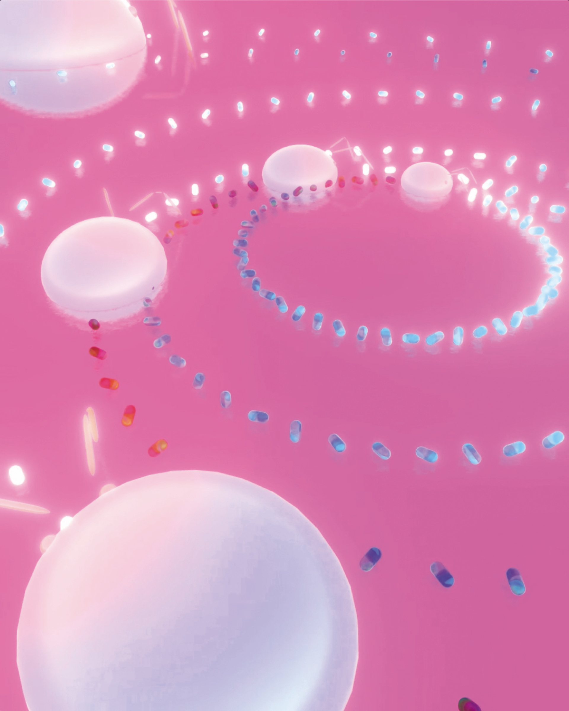
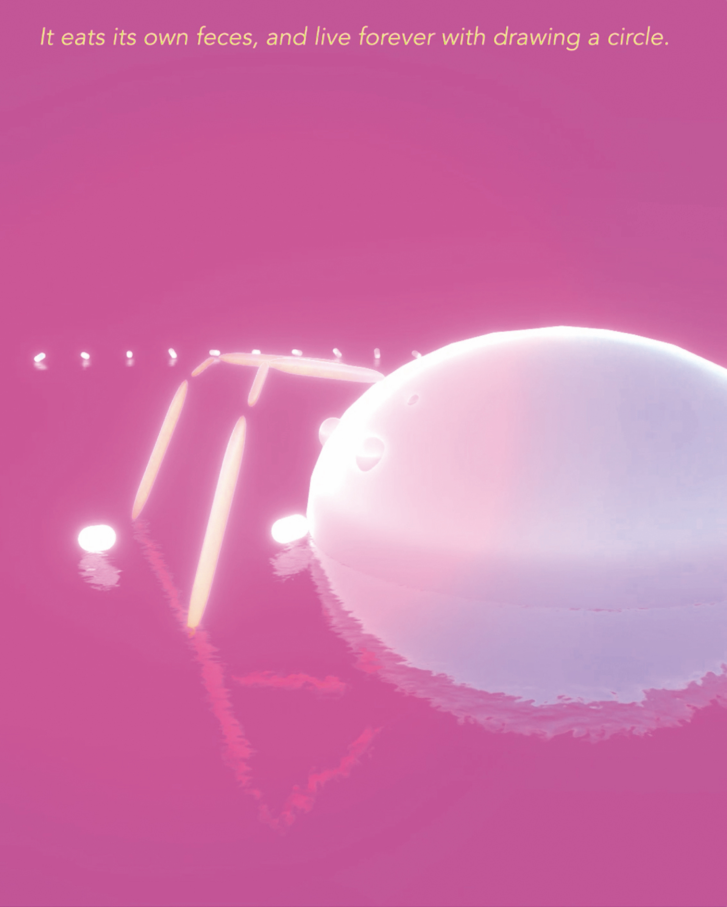
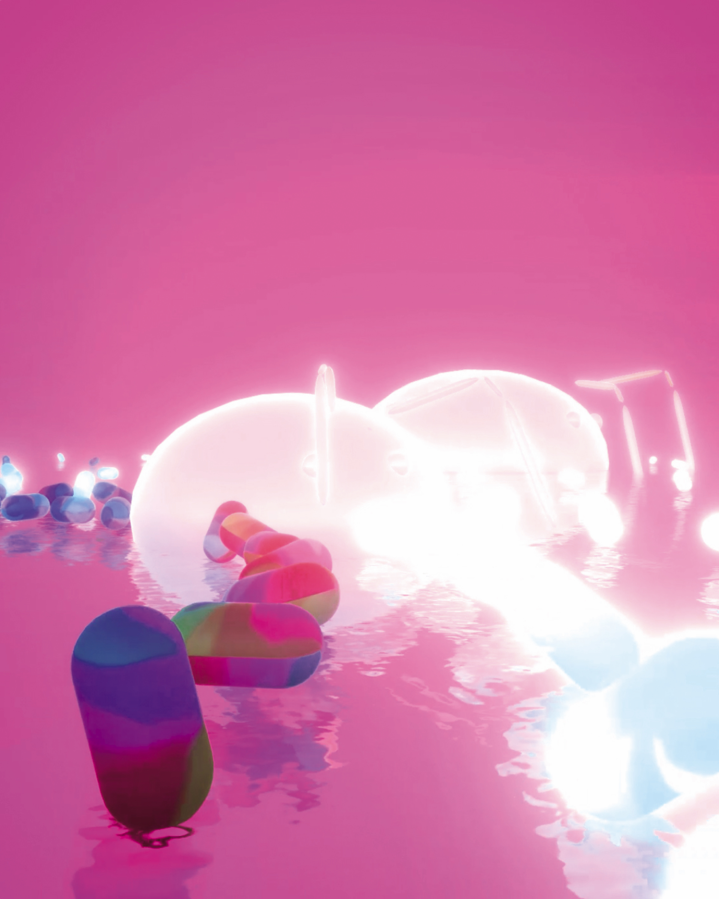

ユープケッチャは安部公房の小説に出てくる、ある種の完全生命体のモデルであり、「永遠」や「循環」への哲学を示している。ユープケッチャは自分の糞を食べることでその生活を完結させており、一つの円相を描きながら生きている。
現実世界では存在しないそれは、原子の循環というアイデアの上にないバーチャル空間でなら存在しうる。
「ユープケッチャはある哲学、もしくは思想をあらわす記号だ」
ーーー「方舟さくら丸」安部公房
この作品においては、ユープケッチャはバーチャル空間への明るい希望のシンボルである。




Eupcaccia in virtual world
Yuto Hayashi
2019 / CG
2019 / CG
Eupcaccia in virtual world
Yuto Hayashi
2019 / Iron, paint application
2019 / Iron, paint application
Trailer
-
Eupcaccia in a Virtual World
Eupcaccia is a fictional creature depicted as a model of absolute life form in a Japanese classic novel
by Kobo Abe.
It completes its own life cycle by feeding on its feces forever with drawing a circle.
It can exist in a virtual world where entropy does not increase.
It is an optimistic symbol of hope towards the future of virtual reality.
Eupcaccia is a fictional creature depicted as a model of absolute life form in a Japanese classic novel
by Kobo Abe.
It completes its own life cycle by feeding on its feces forever with drawing a circle.
It can exist in a virtual world where entropy does not increase.
It is an optimistic symbol of hope towards the future of virtual reality.